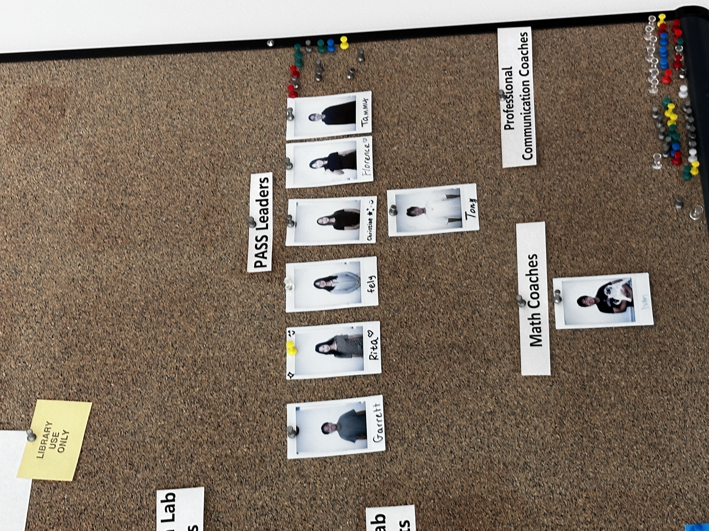
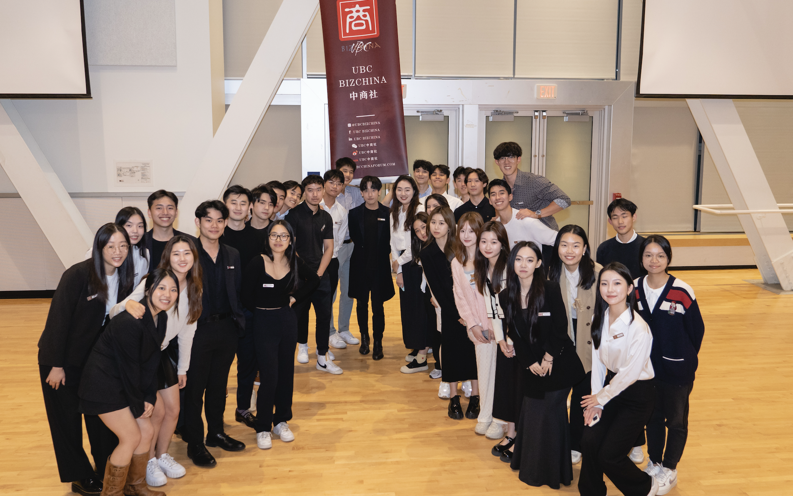
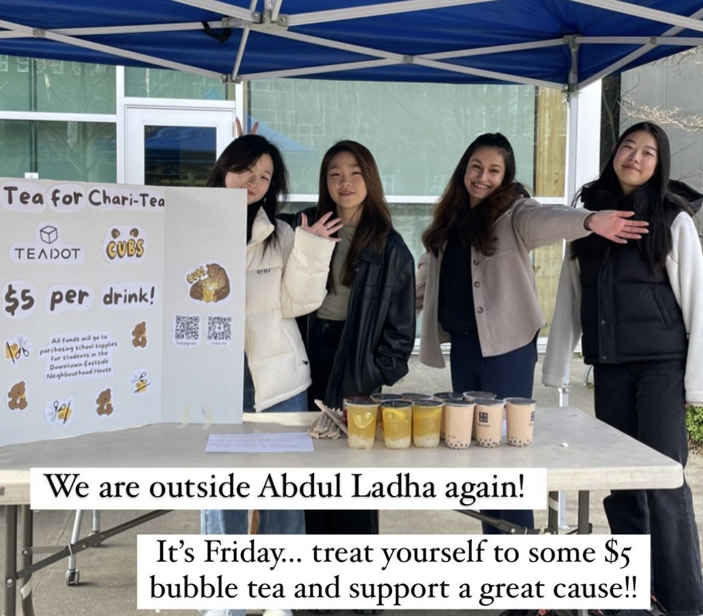
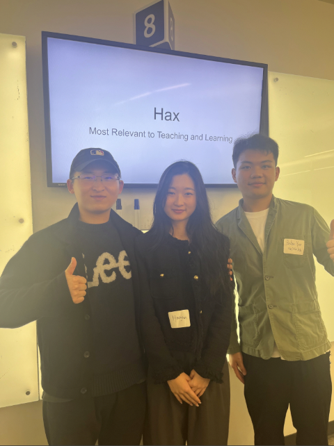
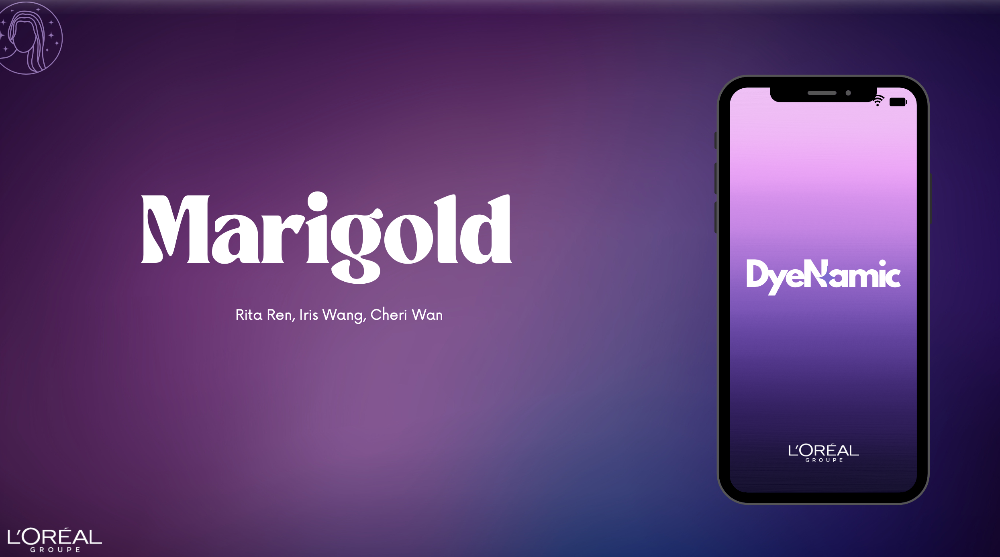

Projects
Selected campus experiences — organizations, competitions, and applied projects. Click each card to read the full story.

UBC BizChina — HR Strategy & Org Development

UBC CUBS — External Relations & Fundraising

2024 Learning Analytics Hackathon (Team HAX)

2024 L’Oréal Case Competition — Brand Strategy & Consumer Analytics